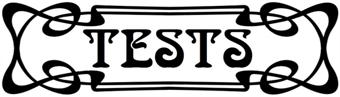

Je mets à votre disposition des échelles, tests et questionnaires thématiques validés par les sciences humaines. Ils ont pour seul intéret une mesure subjective dans une instanté de vie. Ces outils proposés ici ne sont donc, en aucune façon, des diagnostics, cependant ils peuvent accompagner un traitement psychothérapique. Quant aux résultats, si un doute est porté, je vous conseillerai de vous rapprocher d'un spécialiste de santé.
TABAC
VALEUR
CONFIANCE
ESTIME

COMPORTEMENT
TDAH
STRESS
ANXIETE
THYMIE
DEPENDANCE
(humeur)
EMOTION
(addiction)
Questionnaires à télécharger
Ces outils ne constituent pas un diagnostic.